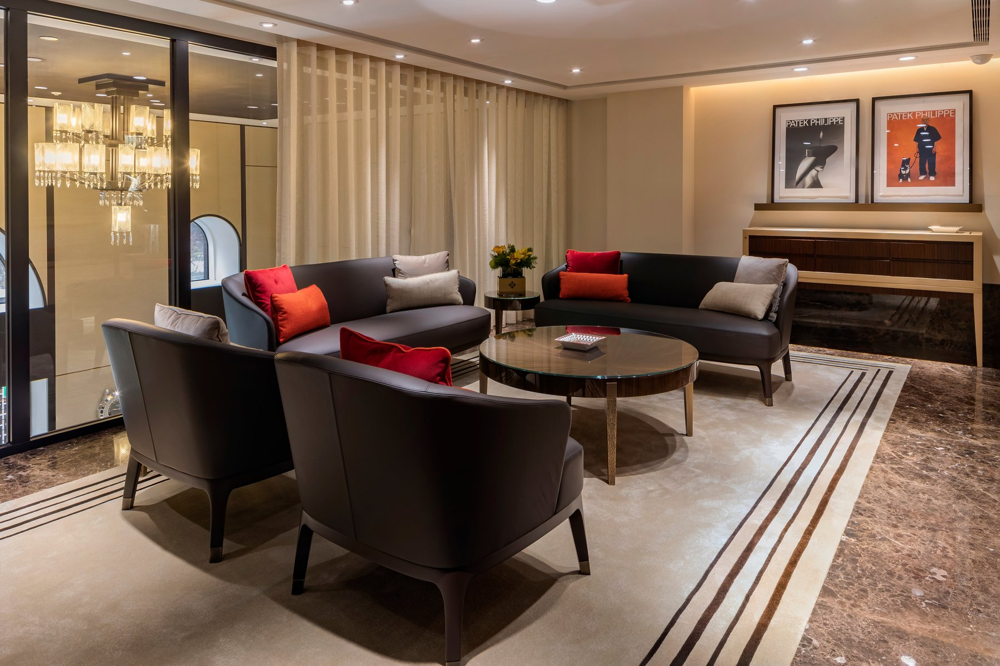
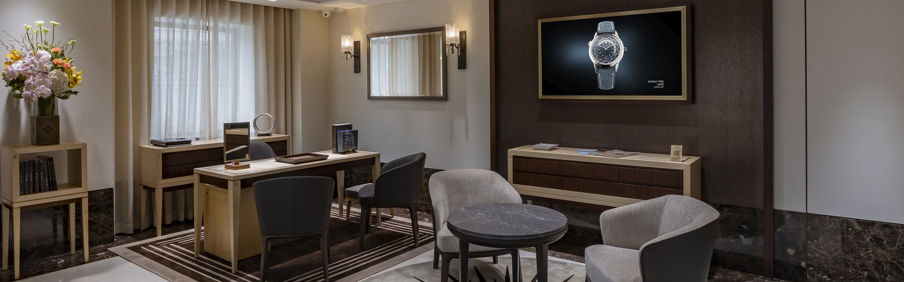
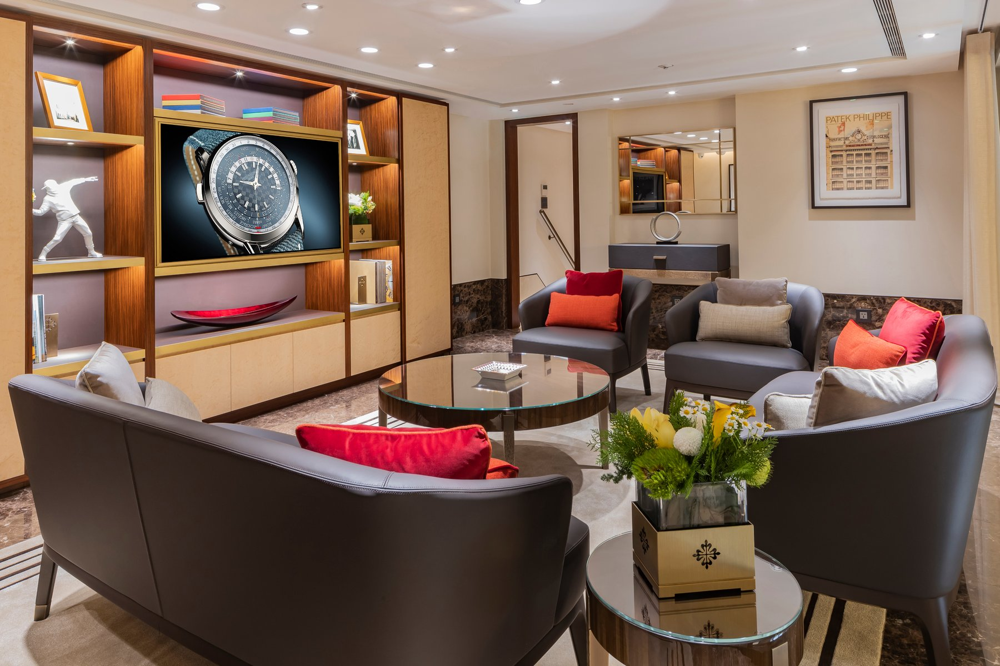
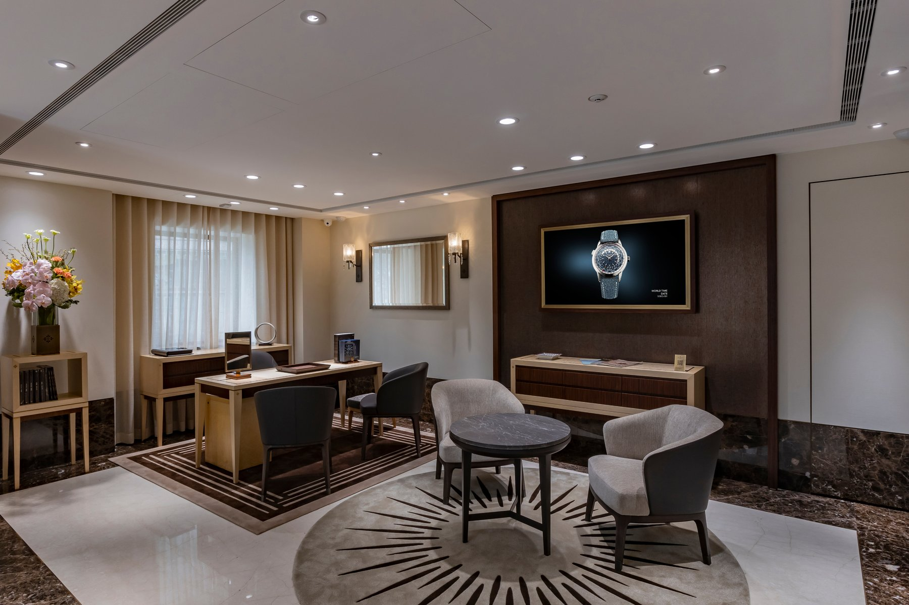
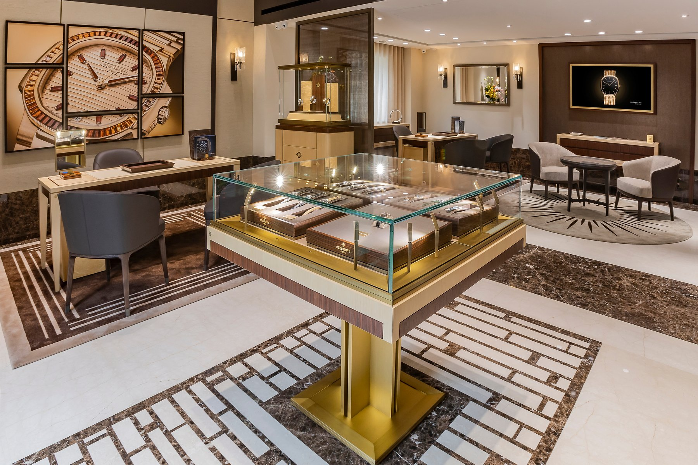

2025年永新鐘錶百達翡麗專館換上新裝，亦是永新鐘錶與百達翡麗合作歷程中的重要篇章。整體設計完整承襲品牌嶄新全球形象設計概念，將傳承精神與現代體驗完美結合。全新內裝主要由鳥眼楓木與印度玫瑰木，搭配咖啡色大理石和黃銅金屬等材質為主，共同組成深棕色經典色系，營造出沉穩而典雅溫馨的氛圍。獨棟建築的空間結構引進大量自然光，室內展示櫃擴大的間距，更提升顧客鑑賞腕錶時的舒適度。位於二樓的VIP室以歐陸溫暖格調營造頂級質感，提供顧客靜謐雅致的賞錶空間。

Boutique

永新鐘錶1986 年起深耕台北天母多年，最早以榮安鐘錶為名，之後更名為永新鐘錶，並於此人文薈萃之地，開啟了與百達翡麗合作的序章。2013年永新鐘錶擴大經營版圖，全台首間百達翡麗專館落成，以嶄新專館形象傳遞百達翡麗卓越工藝與世代相傳的品牌精神，並承載著家族傳承，意義非凡。

創辦人賴建發先生與莊美玲小姐夫婦，攜手第二代亦是現任總經理Henry，延續永新鐘錶以「誠信與服務」為本的經營特色，建構起頂級腕錶藏家無可取代的信任，也是永新鐘錶一路走來最珍貴、無可取代的基石。

2025年永新鐘錶百達翡麗專館換上新裝，亦是永新鐘錶與百達翡麗合作歷程中的重要篇章。整體設計完整承襲品牌嶄新全球形象設計概念，將傳承精神與現代體驗完美結合。全新內裝主要由鳥眼楓木與印度玫瑰木，搭配咖啡色大理石和黃銅金屬等材質為主，共同組成深棕色經典色系，營造出沉穩而典雅溫馨的氛圍。獨棟建築的空間結構引進大量自然光，室內展示櫃擴大的間距，更提升顧客鑑賞腕錶時的舒適度。位於二樓的VIP室以歐陸溫暖格調營造頂級質感，提供顧客靜謐雅致的賞錶空間。

永新鐘錶珍惜每一次與顧客的相遇，以專業與親切服務，致力提供獨特且尊榮的體驗，建立長期的信賴感，呼應百達翡麗品牌價值的具體展現。
百達翡麗最經典的品牌精神，凝聚在這句名言中：「你從來不曾真正擁有一支百達翡麗，你只是為下一代保管它。」永新鐘錶同樣希望將百達翡麗「家族傳承、工藝精神、創新語言」的價值，透過專業而體貼的陪伴與交流，將代代相傳落實在服務中，成為百達翡麗與永新鐘錶，品牌共同的核心精神。
